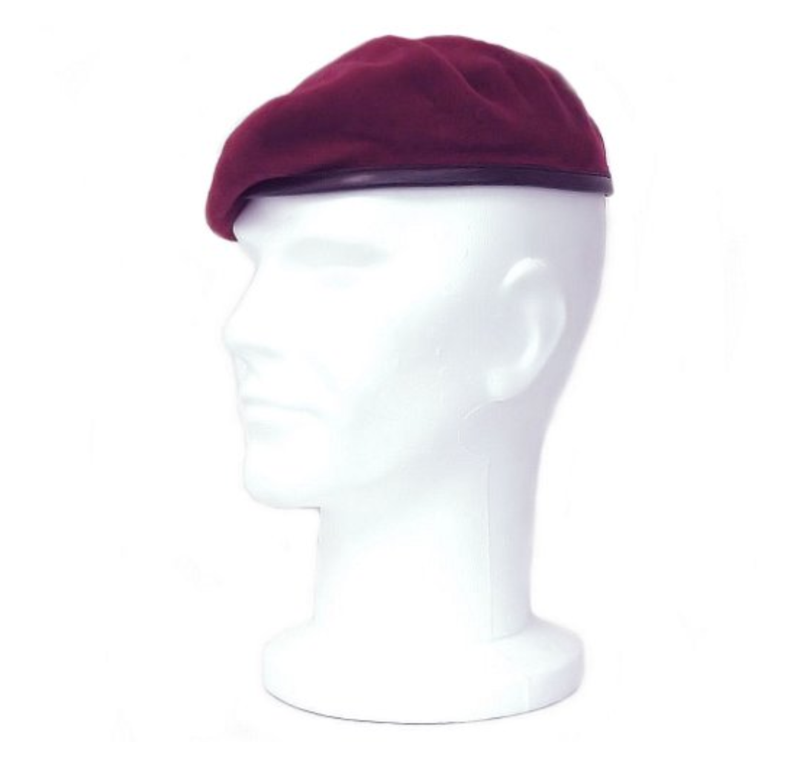
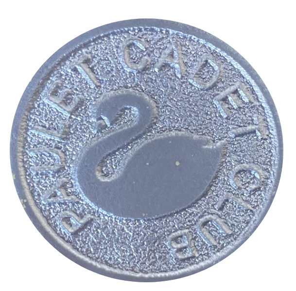
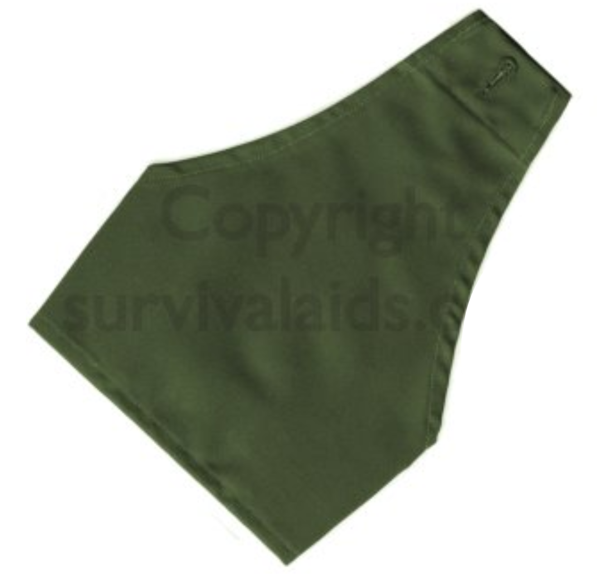

USER:Wojciech Mroz
Uniform
Uniform Images:
Green PCC Jumper:

Beret:
Beret Badge:
Brassard:
Uniform Standards:
Beret-
moulded, all fluff removed, badge clean, correctly fitted.
Hair-
tidy back and sides – short, bun/ponytail - long
Face-
clean, shaven, makeup not visible (matching to skin colour)
PCC Jumper-
all fluff removed, ironed, clean
Brassard-
ironed, all fluff removed, clean, no loose threads
Hands-
clean, no ink,
Trousers-
ironed, all fluff removed, tailored, no loose threads
Boots/shoes-
fully black, polished, leather well treated (creaseless), laces well tied,